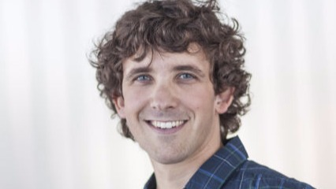

Group leader / Associate professor
Antton
Alberdi.
Center for Evolutionary Hologenomics · GLOBE Institute · University of Copenhagen.

Evolutionary hologenomics
Career
Employment.
Research and teaching appointments in evolutionary genomics, zoology and natural history.
| Period | Position | Institution |
|---|---|---|
| 2020–Present | Associate Professor | GLOBE Institute, University of Copenhagen |
| 2018–2019 | Assistant Professor | Department of Biology, University of Copenhagen |
| 2016–2017 | Postdoctoral Researcher | Natural History Museum of Denmark, University of Copenhagen |
| 2015 | Postdoctoral Researcher | Department of Genetics, University of the Basque Country |
| 2011–2014 | PhD Student | Department of Zoology, University of the Basque Country |
Research leadership
Main projects.
International programmes and investigator-led projects spanning spatial multi-omics and hologenomics.
| Period | Role | Project | Funding |
|---|---|---|---|
| 2022–Present | Principal Investigator | 3D-Chip-Omics | Novo Nordisk Foundation |
| 2021–Present | Coordinator | 3D’omics Research & Innovation Action | European Commission |
| 2020–Present | Coordinator | Earth Hologenome Initiative | DNRF, Carlsbergfondet |
| 2019–2023 | Scientific Manager | HoloFood Innovation Action | European Commission |
| 2018–2020 | Principal Investigator | MicrobControl | Lundbeck Foundation |
| 2016–2017 | Principal Investigator | Ancient guano metagenomics | Danish Research Council |
Service
Editorial work.
Editorial roles across journals focused on microbiomes and environmental microbial research.